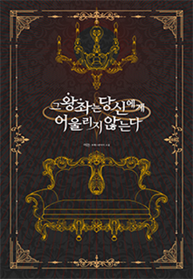

그 왕좌는 당신에게 어울리지 않는다
이든
“당신이 그 자리에 계속 앉아 있겠다고 버틴다면 어쩔 수 없지. 내 손으로 끌어내리는 수밖에.”
게르하르트의 서늘한 시선이 계단을 밟고 위로 또 위로 올라갔다. 바라보기도 힘들 만큼 찬란한 빛을 발하는 왕좌 위에는 그의 오랜 친우가 앉아 있었다.
종족을 뛰어넘어 서로를 이해하는 사이라고 생각했다. 그 모든 대화가 게르하르트의 눈을 가리기 위한 거짓말이었다는 사실을 알아차리기 전까지. 그녀의 손에 잡혀 이용당하고 끝내 죽임당한
동족들의 시체가 이룬 산을 발견하기 전까지 말이다.
그녀의 오만함이 흘러넘치는 낯을 꿋꿋하게 응시하던 게르하르트가 말했다.
“그래. 인정해. 당신의 능력은 나로서도 높이 평가하지 않을 수가 없지.”
- #서양배경
- #로맨스판타지
- #인외존재
- #배신
- #애증
- #카리스마남
- #계략녀